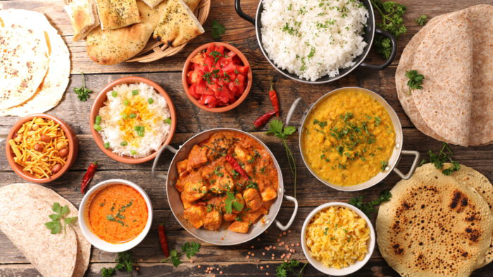
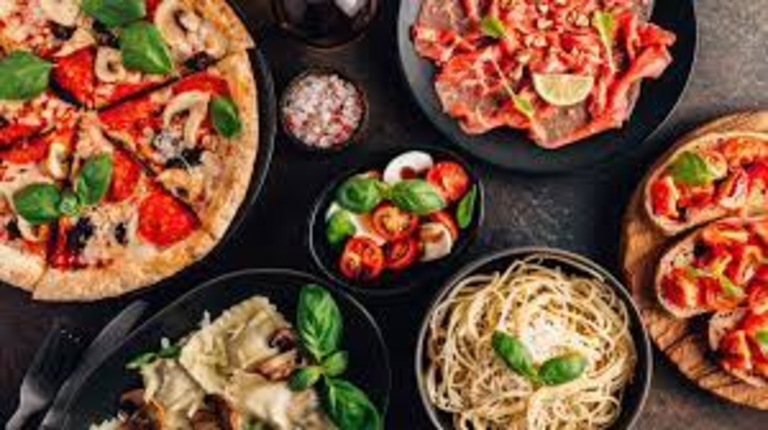
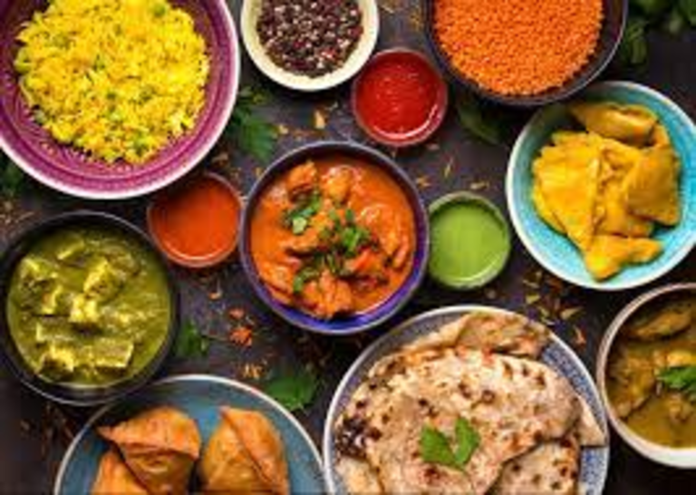

My Favourite Cuisines
A cuisine is a style of cooking characterized by distinctive ingredients, techniques and dishes, and usually associated with a specific culture or geographic region. Regional food preparation techniques, customs, and ingredients combine to enable dishes unique to a region. A cuisine is partly determined by ingredients that are available locally or through trade. Regional ingredients are developed and commonly contribute to a regional or national cuisine, such as Japanese rice in Japanese cuisine or New Mexico chile in New Mexican cuisine. Likewise, national dishes have variations, such as gyros in Greek cuisine and hamburger in American cuisine.
Religious food laws can also exercise an influence on cuisine, such as Hinduism in Indian cuisine, Sikhism in Punjabi cuisine, Buddhism in East Asian cuisine, Christianity in European cuisine Islam in Middle Eastern cuisine, and Judaism in Jewish and Israeli cuisine.
Below are some pictures and explanations of some of my favourite cuisines:
| Image | Cuisine |
|---|---|
|  | Cape Malay Cuisine Cape Malay food is a cuisine unique to the Western Cape of South Africa. It’s a style of food steeped in history and preserved through ongoing tradition. Most know the cuisine for its fruity, mild spices and full-bodied flavours, which are heavily influenced by its overseas origins. The Cape Malay special style of cooking fuses traditions from Malaysian, Indonesian and East African slaves, who were brought to Cape Town by Dutch settlers in the 17th and 18th centuries. Today, Cape Malay cuisine remains an important part of the Western Cape’s culture and heritage, especially among the Muslim population of Cape Town. |
|  | Italian Cuisine: Italian cuisine is a Mediterranean cuisine consisting of the ingredients, recipes and cooking techniques developed across the Italian Peninsula and later spread around the world together with waves of Italian diaspora. Some of these foods were imported from other cultures. Significant changes occurred with the colonization of the Americas and the introduction of potatoes, tomatoes, capsicums, maize and sugar beet—the latter introduced in quantity in the 18th century. It is one of the best-known and most appreciated gastronomies worldwide. |
 |
Thai Cuisine Thai cooking places emphasis on lightly prepared dishes with strong aromatic components and a spicy edge. Australian chef David Thompson, an expert on Thai food, observes that unlike many other cuisines, Thai cooking is "about the juggling of disparate elements to create a harmonious finish. Like a complex musical chord it's got to have a smooth surface but it doesn't matter what's happening underneath. Simplicity isn't the dictum here, at all." |
 |
African Cuisine African cuisine is a staple of the continent's culture, and its history is entwined with the story of the people of Africa. The foods that Africans eat have been influenced by their religions, as well as by their climates and lifestyles. The first Africans to inhabit the continent were hunter-gatherers who ate what they could find in nature. As agriculture became more common in Africa, so did agriculture-based diets. Traditionally, the various cuisines of Africa use a combination of plant-and seed-based ingredients, without having food imported. In some parts of the continent, the traditional diet features an abundance of root tuber products. Central Africa, East Africa, North Africa, Southern Africa and West Africa each have distinctive dishes, preparation techniques, and consumption modes. |
|  | Indian Cuisine: Indian cuisine consists of a variety of regional and traditional cuisines native to India. Given the diversity in soil, climate, culture, ethnic groups, and occupations, these cuisines vary substantially and use locally available spices, herbs, vegetables, and fruits. Indian food is also heavily influenced by religion, in particular Hinduism and Islam, cultural choices and traditions |